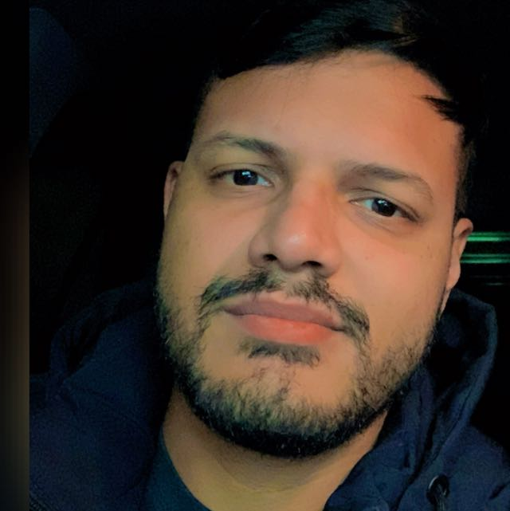

Danilo Franco
.

Danilo de Sousa Franco
Desenvolvimento de Sistemas - Turma CNI
Fichário - Agenda 11 - Desenvolvimento de sistemas
Curiosidades sobre o Brazilian Jiu-Jitsu
História do Brazilian Jiu-Jitsu
A história do Brazilian Jiu-Jitsu começa no final do século XIX, quando o judoca japonês Mitsuyo Maeda chegou ao Brasil, em 1914.
Maeda, que era conhecido como Conde Koma, foi convidado pelo empresário Gastão Gracie para dar aulas de judô em Belém, no Pará.

Foi lá que ele conheceu Carlos Gracie, filho de Gastão, que se tornou seu aluno e, posteriormente, seu parceiro de treinos.
Carlos Gracie aprimorou o judô que aprendeu com Maeda e desenvolveu um estilo de luta próprio, que ele chamou de Gracie Jiu-Jitsu.
O Gracie Jiu-Jitsu enfatizava a técnica e a habilidade, em vez da força bruta, e se tornou famoso por sua eficácia em combates corpo a corpo.
A família Gracie, liderada por Carlos e seus irmãos Helio, George, Oswaldo e Gastão Jr., popularizou o Jiu-Jitsu no Brasil e no mundo.
Ao longo do tempo, o Jiu-Jitsu passou por mudanças e evoluções, com novas técnicas sendo desenvolvidas e novos estilos surgindo.
Mas a família Gracie permaneceu no centro da cena do Jiu-Jitsu, promovendo competições e treinando alguns dos melhores lutadores do mundo.
Hoje, o Brazilian Jiu-Jitsu é uma arte marcial globalmente reconhecida, com milhões de praticantes em todo o mundo.
A história da família Gracie e de seus sucessores no esporte, como Royce Gracie, é um legado duradouro que inspirou uma nova geração de lutadores a abraçar o Jiu-Jitsu e seus valores.
Benefícios do Jiu-Jitsu

O Jiu-Jitsu é uma arte marcial que oferece muitos benefícios para a saúde física e mental de seus praticantes. Aqui estão alguns dos principais benefícios do Jiu-Jitsu:


- Condicionamento físico: O Jiu-Jitsu é uma forma eficaz de exercício cardiovascular e de força, ajudando a melhorar o condicionamento físico geral. Além disso, a prática do Jiu-Jitsu ajuda a desenvolver a coordenação, a flexibilidade e o equilíbrio.
- Melhora na autoconfiança: O Jiu-Jitsu pode ajudar a aumentar a autoconfiança, pois os praticantes aprendem a enfrentar desafios e a superar medos. A habilidade de se defender em situações perigosas também pode aumentar a confiança em si mesmo e em suas habilidades.
- Redução do estresse: O Jiu-Jitsu pode ajudar a reduzir o estresse e a ansiedade, pois libera endorfinas e ajuda a aliviar a tensão física e mental.
- Aumento da concentração: A prática do Jiu-Jitsu requer foco e concentração, o que pode ajudar a melhorar a atenção e a capacidade de concentração em outras áreas da vida.
- Desenvolvimento de habilidades sociais: O Jiu-Jitsu é uma atividade social, e os praticantes frequentemente se tornam parte de uma comunidade. Isso pode ajudar a desenvolver habilidades sociais, como a capacidade de trabalhar em equipe, a comunicação e a empatia.
- Aprendizado de habilidades de autodefesa: O Jiu-Jitsu é uma arte marcial eficaz para autodefesa, ensinando técnicas de luta que podem ajudar a se proteger em situações perigosas.
Esses são apenas alguns dos muitos benefícios do Jiu-Jitsu. A prática regular desta arte marcial pode ajudar a melhorar a saúde e o bem-estar físico e mental de seus praticantes.
Técnicas de Jiu-Jitsu
O Jiu-Jitsu é uma arte marcial que se concentra em técnicas de luta no solo, usando estrangulamentos, chaves e outras técnicas para imobilizar o oponente ou fazê-lo desistir da luta. Aqui estão algumas das principais técnicas do Jiu-Jitsu:
- Quedas e rolamentos: O Jiu-Jitsu ensina técnicas de queda e rolagem para reduzir o impacto de uma queda e evitar lesões.
- Posicionamento e controle: O Jiu-Jitsu ensina a importância do posicionamento correto do corpo e do controle do adversário. O objetivo é chegar a uma posição superior em relação ao adversário, como a montada, e manter o controle para imobilizá-lo.
- Estrangulamentos: Os estrangulamentos são técnicas de pressão no pescoço que podem levar o oponente a desistir da luta.
- Chaves de braço e perna: As chaves são técnicas de torção no braço ou perna do oponente, com o objetivo de levar o oponente a desistir da luta.
- Defesa pessoal: O Jiu-Jitsu ensina técnicas de defesa pessoal que podem ser usadas em situações de perigo, como imobilizar um oponente ou se livrar de um agarrão.
- Variações de guarda: A guarda é uma posição defensiva, e o Jiu-Jitsu ensina diferentes variações de guarda para lidar com diferentes tipos de ataques.
Essas são apenas algumas das muitas técnicas que o Jiu-Jitsu ensina. Cada técnica é projetada para maximizar a eficácia do lutador e permitir que ele lute com sucesso em uma ampla variedade de situações.
Regras de competição
As regras de competição do jiu-jitsu podem variar de acordo com a organização que promove a competição, mas aqui estão algumas das regras mais comuns:
- Pontuação: Os pontos são concedidos por técnicas como quedas, variações de guarda, imobilizações e estrangulamentos/chaves. A pontuação pode variar de acordo com a organização, mas em geral, a luta pode ser vencida por pontos.
- Tempo: As lutas geralmente duram de 5 a 10 minutos, dependendo da faixa etária e da categoria dos competidores.
- Faixas: Os competidores são agrupados por faixas, com diferentes regras para cada faixa. Os competidores geralmente só podem lutar contra outros competidores da mesma faixa.
- Vestimenta: Os competidores devem usar um kimono de jiu-jitsu aprovado pela organização. As mulheres geralmente usam tops especiais em vez de kimonos.
- Golpes permitidos: A maioria dos golpes são permitidos, incluindo quedas, chaves, estrangulamentos e outros golpes de imobilização. No entanto, alguns golpes são proibidos, como golpes que atacam diretamente as articulações.
- Desclassificação: Os competidores podem ser desclassificados por violar as regras da competição, como atacar o adversário de forma perigosa, usar linguagem ofensiva ou comportamento antidesportivo.
Essas são apenas algumas das regras básicas do jiu-jitsu competitivo. É importante que os competidores conheçam as regras da organização específica em que irão competir antes de participarem da competição.
Alimentação e Jiu-Jitsu
A alimentação é uma parte importante do treinamento de Jiu-Jitsu, pois uma dieta equilibrada e saudável pode ajudar a fornecer ao corpo a energia e os nutrientes necessários para o treinamento e a recuperação. Aqui estão algumas dicas sobre alimentação e Jiu-Jitsu:
- Hidratação: A hidratação adequada é fundamental para o bom funcionamento do corpo durante o treinamento. É importante beber água antes, durante e após o treino para garantir que o corpo esteja bem hidratado.
- Carboidratos: Os carboidratos são uma fonte importante de energia para o corpo, por isso é recomendável incluir carboidratos complexos, como arroz integral, pão integral e batata-doce na dieta.
- Proteínas: As proteínas são importantes para o crescimento e reparação muscular, por isso é importante incluir proteínas magras na dieta, como frango, peixe, carne magra, ovos e legumes.
- Gorduras saudáveis: As gorduras saudáveis, como as encontradas em nozes, sementes, abacate e azeite de oliva, são importantes para a saúde geral do corpo e podem ajudar a manter os níveis de energia durante o treinamento.
- Refeições pré-treino: É importante comer uma refeição equilibrada antes do treino para fornecer ao corpo a energia necessária para o treinamento. É recomendável comer uma refeição rica em carboidratos e proteínas cerca de 2 a 3 horas antes do treino.
- Refeições pós-treino: As refeições pós-treino são importantes para a recuperação muscular e para a reposição de energia. É recomendável comer uma refeição rica em proteínas e carboidratos dentro de 30 minutos a 1 hora após o treino.
Em geral, uma dieta equilibrada e saudável, rica em nutrientes, pode ajudar os praticantes de Jiu-Jitsu a ter mais energia e a se recuperar mais rapidamente após o treinamento.
Curiosidades sobre competições
As competições de Jiu-Jitsu são cheias de curiosidades e fatos interessantes. Aqui estão algumas curiosidades sobre competições de Jiu-Jitsu:
- A competição mundial de Jiu-Jitsu, conhecida como Mundial de Jiu-Jitsu da IBJJF, é realizada anualmente no Brasil. É considerada a maior competição de Jiu-Jitsu do mundo, atraindo competidores de todo o mundo.
- Os competidores são classificados em categorias de peso, que variam de acordo com a organização da competição. As categorias são geralmente divididas em faixas, sexo e idade.
- O Jiu-Jitsu é um esporte que exige muita paciência e estratégia. Por isso, as lutas podem durar bastante tempo. Algumas lutas podem durar 10 minutos ou mais, dependendo da categoria e do nível de habilidade dos competidores.
- Nas competições de Jiu-Jitsu, os competidores usam kimonos, que são roupas especiais feitas de algodão resistente. O kimono é usado para ajudar a controlar o adversário durante a luta.
- A competição de Jiu-Jitsu tem um sistema de pontuação específico que é usado para determinar o vencedor da luta. Os pontos são concedidos por técnicas como quedas, variações de guarda, imobilizações e estrangulamentos/chaves.
- As competições de Jiu-Jitsu são conhecidas por sua comunidade solidária. Competidores muitas vezes se cumprimentam antes e depois das lutas, independentemente do resultado. Também é comum ver competidores torcendo pelos seus companheiros de equipe.
- Algumas competições de Jiu-Jitsu também apresentam categorias de equipe, onde as equipes competem umas contra as outras em vez de indivíduos.
Essas são apenas algumas das curiosidades sobre competições de Jiu-Jitsu. O esporte é repleto de tradições e costumes interessantes que fazem parte da sua cultura e história.